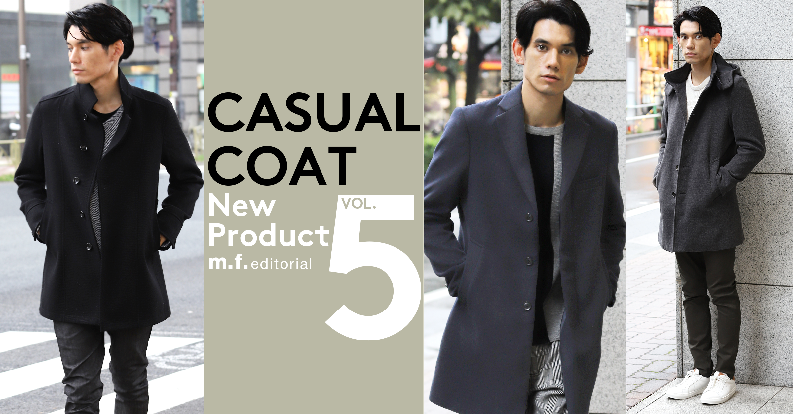
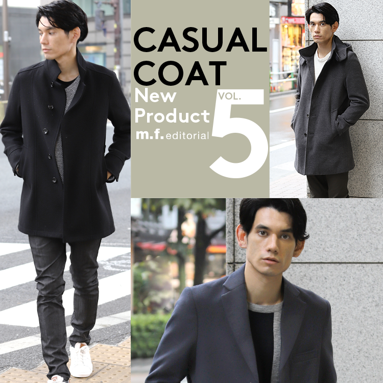
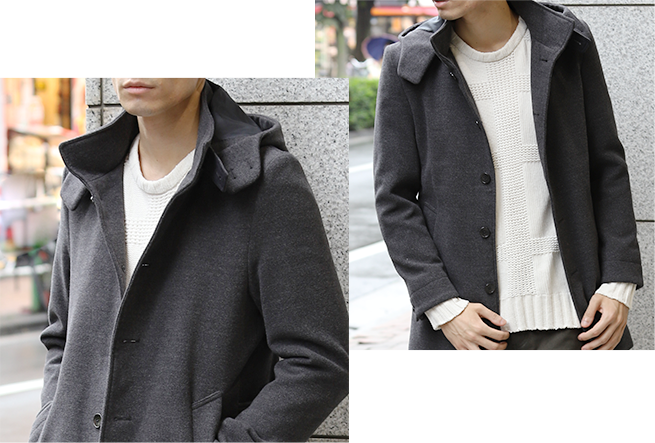
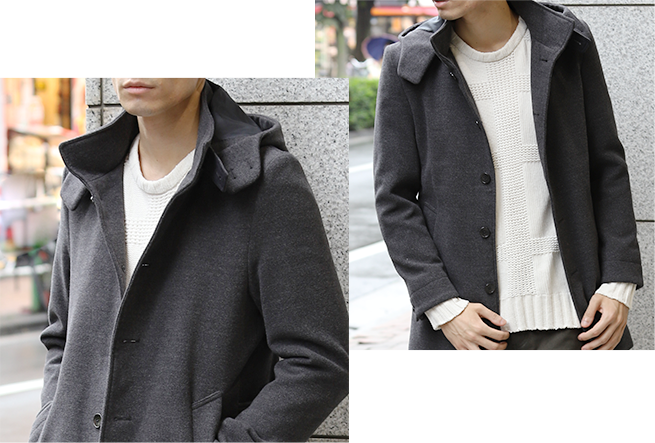

 
今年の冬をガラッと変える！
あると便利な軽く羽織れるコート
「冬に軽快なコーディネートを楽しめるコートを着てみたい」
そんな人に
おすすめする、エム・エフ・エディトリアルの
カジュアルコート３選。

 

フード脱着式のコート。フードのボリュームが暖かさを感じさせるデザイン。やや丈長めのボリュームトップで、スタイリッシュな印象。細めのパンツをあわせて、よりモードなコーディネートが完成。フードをとれば、スタンドコートとして2通りの着用が可能。ジャケットがかくれる丈なので、スーツオンもOK。